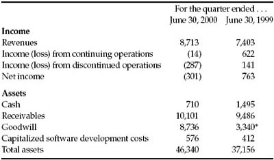
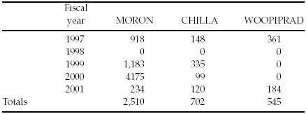
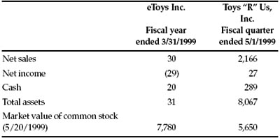

The wisdom god, Woden, went out to the king of the trolls, got him in an armlock, and demanded to know of him how order might triumph over chaos. “Give me your left eye,” said the troll, “and I’ll tell you.” Without hesitation, Woden gave up his left eye. “Now tell me.” The troll said, “The secret is, ‘Watch with both eyes!’”
—John Gardner
Graham highlights four extremes:
The past few years have provided enough new cases of Graham’s extremes to fill an encyclopedia. Here is a sampler:
In mid-2000, Lucent Technologies Inc. was owned by more investors than any other U.S. stock. With a market capitalization of $192.9 billion, it was the 12th-most-valuable company in America.
Was that giant valuation justified? Let’s look at some basics from Lucent’s financial report for the fiscal quarter ended June 30, 2000: 1
FIGURE 17-1 Lucent Technologies Inc.

All numbers in millions of dollars. * Other assets, which includes goodwill.
Source: Lucent quarterly financial reports (Form 10-Q).
A closer reading of Lucent’s report sets alarm bells jangling like an unanswered telephone switchboard:
CONCLUSION: In August 2001, Lucent shut down the Chromatis division after its products reportedly attracted only two customers. 2 In fiscal year 2001, Lucent lost $16.2 billion; in fiscal year 2002, it lost another $11.9 billion. Included in those losses were $3.5 billion in “provisions for bad debts and customer financings,” $4.1 billion in “impairment charges related to goodwill,” and $362 million in charges “related to capitalized software.”
Lucent’s stock, at $51.062 on June 30, 2000, finished 2002 at $1.26—a loss of nearly $190 billion in market value in two-and-a-half years.
To describe Tyco International Ltd., we can only paraphrase Winston Churchill and say that never has so much been sold by so many to so few. From 1997 through 2001, this Bermuda-based conglomerate spent a total of more than $37 billion—most of it in shares of Tyco stock—buying companies the way Imelda Marcos bought shoes. In fiscal year 2000 alone, according to its annual report, Tyco acquired “approximately 200 companies”—an average of more than one every other day.
The result? Tyco grew phenomenally fast; in five years, revenues went from $7.6 billion to $34 billion, and operating income shot from a $476 million loss to a $6.2 billion gain. No wonder the company had a total stock-market value of $114 billion at the end of 2001.
But Tyco’s financial statements were at least as mind-boggling as its growth. Nearly every year, they featured hundreds of millions of dollars in acquisition-related charges. These expenses fell into three main categories:
For the sake of brevity, let’s refer to the first kind of charge as MORON, the second as CHILLA, and the third as WOOPIPRAD. How did they show up over time?
FIGURE 17-2 Tyco International Ltd.

All figures are as originally reported, stated in hundreds of millions of dollars.
“Mergers & acquisitions” totals do not include pooling-of-interests deals.
Source: Tyco International annual reports (Form 10-K).
As you can see, the MORON charges— which are supposed to be nonrecurring —showed up in four out of five years and totaled a whopping $2.5 billion. CHILLA cropped up just as chronically and amounted to more than $700 million. WOOPIPRAD came to another half-billion dollars. 3
The intelligent investor would ask:
In fact, an investor couldn’t even tell what Tyco’s past earnings were. In 1999, after an accounting review by the U.S. Securities and Exchange Commission, Tyco retroactively added $257 million in MORON charges to its 1998 expenses—meaning that those “nonrecurring” costs had actually recurred in that year, too. At the same time, the company rejiggered its originally reported 1999 charges: MORON dropped to $929 million while CHILLA rose to $507 million.
Tyco was clearly growing in size, but was it growing more profitable? No outsider could safely tell.
CONCLUSION: In fiscal year 2002, Tyco lost $9.4 billion. The stock, which had closed at $58.90 at year-end 2001, finished 2002 at $17.08—a loss of 71% in twelve months. 4
On January 10, 2000, America Online, Inc. and Time Warner Inc. announced that they would merge in a deal initially valued at $156 billion.
As of December 31, 1999, AOL had $10.3 billion in assets, and its revenues over the previous 12 months had amounted to $5.7 billion. Time Warner, on the other hand, had $51.2 billion in assets and revenues of $27.3 billion. Time Warner was a vastly bigger company by any measure except one: the valuation of its stock. Because America Online bedazzled investors simply by being in the Internet industry, its stock sold for a stupendous 164 times its earnings. Stock in Time Warner, a grab bag of cable television, movies, music, and magazines, sold for around 50 times earnings.
In announcing the deal, the two companies called it a “strategic merger of equals.” Time Warner’s chairman, Gerald M. Levin, declared that “the opportunities are limitless for everyone connected to AOL Time Warner”—above all, he added, for its shareholders.
Ecstatic that their stock might finally get the cachet of an Internet darling, Time Warner shareholders overwhelmingly approved the deal. But they overlooked a few things:
CONCLUSION: On January 11, 2001, the two firms finalized their merger. AOL Time Warner Inc. lost $4.9 billion in 2001 and—in the most gargantuan loss ever recorded by a corporation—another $98.7 billion in 2002. Most of the losses came from writing down the value of America Online. By year-end 2002, the shareholders for whom Levin predicted “unlimited” opportunities had nothing to show but a roughly 80% loss in the value of their shares since the deal was first announced. 5
On May 20, 1999, eToys Inc. sold 8% of its stock to the public. Four of Wall Street’s most prestigious investment banks—Goldman, Sachs & Co.; BancBoston Robertson Stephens; Donaldson, Lufkin & Jenrette; and Merrill Lynch & Co.—underwrote 8,320,000 shares at $20 apiece, raising $166.4 million. The stock roared up, closing at $76.5625, a 282.8% gain in its first day of trading. At that price, eToys (with its 102 million shares) had a market value of $7.8 billion. 1
What kind of business did buyers get for that price? eToys’ sales had risen 4,261% in the previous year, and it had added 75,000 customers in the last quarter alone. But, in its 20 months in business, eToys had produced total sales of $30.6 million, on which it had run a net loss of $30.8 million—meaning that eToys was spending $2 to sell every dollar’s worth of toys.
The IPO prospectus also disclosed that eToys would use some proceeds of the offering to acquire another online operation, Baby-Center, Inc., which had lost $4.5 million on $4.8 million in sales over the previous year. (To land this prize, eToys would pay a mere $205 million.) And eToys would “reserve” 40.6 million shares of common stock for future issuance to its management. So, if eToys ever made money, its net income would have to be divided not among 102 million shares, but among 143 million—diluting any future earnings per share by nearly one-third.
A comparison of eToys with Toys “R” Us, Inc.—its biggest rival—is shocking. In the preceding three months, Toys “R” Us had earned $27 million in net income and had sold over 70 times more goods than eToys had sold in an entire year. And yet as Figure 17-3 shows, the stock market valued eToys at nearly $2 billion more than Toys “R” Us.
CONCLUSION: On March 7, 2001, eToys filed for bankruptcy protection after racking up net losses of more than $398 million in its brief life as a public company. The stock, which peaked at $86 per share in October 1999, last traded for a penny.
FIGURE 17-3 A Toy Story

All amounts in millions of dollars.
Sources: The companies’ SEC filings.